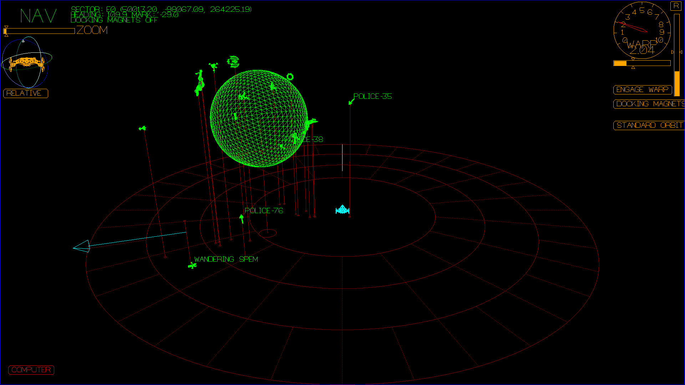

{kind=link}

A Terrestrial Planet
A Gas Giant
This is a linux game. You will need a computer running linux.
A raspberry pi doesn't count, it's not powerful enough. The game is
currently developed using Mint 17.3
It is within the realm of possibility that the game could be made to build
and work on Mac OSX (it has been done before, but not within the last
couple years.) You're on your own if you want to try to run it on Mac.
Build dependencies
If you want to try the optional speech recognition, you will want the following packages:
The above list may be incomplete, and these are the package names on mint 17.3 / ubuntu,
so may be different on RPM based systems.
The source code is here:
Space Nerds In Space github page
To get it, there are three methods:
After downloading, you must unpack the zip file. Type:
To build the code, make sure you are in the top level
directory for the game ("space-nerds-in-space" if you
got the source using git, or "space-nerds-in-space-master" if you
downloaded the zip file), and type:
You should see quite a lot of output, like this:
If you have problems building the code, it likely means there is some
missing dependency. Double check that you have all the required dependencies
installed.
You can also file a bug report if you think you have discovered a problem
with the build process, or the instructions here. I believe you will need a github
account to file a bug report.
Type:
Note: This will run both the "server" and the "client" on your machine.
After awhile, you should see a screen that looks something like this
(without the white ovals):
Once connected to the lobby, you should see something like this:
Click on the white text "DEFAULT2". When you do that, you should see:
Click on the "CONNECT TO SERVER" button on the right side of the screen.
After you do that, you should briefly see this:
and then this should quickly be replaced be an "out the window" view
of space, as below, the "main screen" view of Space Nerds In Space. It may not look
exactly like this as your ship will be placed in a semi-random location facing
an arbitrary direction. If you've gotten this far, congratulations, you're doing
better than most.
The function keys are used to switch between screens, except for F1, which is the 'help' key.
To quit the game, press ESC and confirm using arrow keys and ENTER.
Note, this only quits your client process.
You can re-join the server (via "./quickjoin" script)
It still leaves several processes running, the snis_server, the lobby process
and snis_multiverse. To kill all of them, run the "./killem" script.
From the navigation screen, you can steer the ship and maneuver around.

From the weapons screen, you can fire the laser turret and launch torpedoes.
From the engineering screen, you can control how power and coolant is distributed
to the various systems of the ship.
From the damage control screen, you can repair the various systems of the ship.
From the science screen, you can scan ships, planets, asteroids, launch the mining
robot and help navigate to distant targets.
Short Range Scanner
Scanning Target Details
Long Range Scanner
From the communications screen, you can hail starbases and other player ships and
control what is displayed on the "main screen" as well as activate the RED ALERT alarm.
You also control the ship's inventory and can interact with the ship's computer to
ask it questions or even use it to control almost any aspect of the ship.
So what can Comms do with this terminal interface? First of all, anything
which is typed in that is not a command is broadcast on the current channel,
which is by default channel 0, which all player ships receive. You can also
switch channels, and only player ships tuned to the particular channel will
receive those messages. The intent here is for player-to-player chat in a
multi-bridge setup. The channel system is also used (implicitly) for
communications with starbases and with mining bots.
Commands you can type in are preceded with a slash, '/', along the lines of IRC commands.
Of the above, /hail, and /computer are the most powerful.
/hail is how you communicate with starbases to request permission to dock,
or other things that starbases do (not all of which are implemented yet):
You may /hail other player ships, or mining bots. The mining bots have some
functionality accessed via comms:
The /computer command is the most powerful action the Comms officer can use,
with this, the entire ship may be controlled just by asking the computer to do
things in English. For example, stuff like this should all work:
What a typical multiplayer setup looks like.
You will need the following hardware:
It helps to have a basic understanding of how the system works
in order to set it up and troubleshoot in case something doesn't work
like you expect. The basic components of the system are:
The first thing that you need to do is get all the hardware into your game room,
arranged on furniture in such a way that everyone can see the big TV or projector,
connect it all up and make sure it is nominally working. That means:
There is a script to help with setting up: snis_launcher.
and after a short time, you should see the "main view", something like this:
Repeat the following steps for each bridge station.
That's it for the bridge station setup. Repeat for each station.
Here is a youtube
playlist of development videos for Space Nerds In Space spanning the time from the very beginning
when the game was literally not much more than
just a bunch of dots on the screen up until the present day.
Here is a set of slides about speech recognition and
natural language processing in Space Nerds In Space.
Here is a set of slides from a talk I gave about procedurally generating gas giant
planet textures: Procedurally Generating
Gas Giant Textures.
Here are some pictures showing various noise-scales and the effect they have in gaseous-giganticus.
Here is a slideshow about the
implemenation of planetary rings and shadows cast by and on them in Space Nerds
In Space.
Here is a slideshow about 'earthlike', which
is a program used to generate some of the earthlike planet textures within Space Nerds In Space.
(Use arrow keys to navigate the slideshow. And press F11 for full screen.)
Most of the code is
licensed under the GPL v. 2, or at your option, any later version. Some parts of the code
have an MIT license. Audio files have
various other licenses, typically some variant of a Creative Commons license. I have tried
to be diligent about making sure it is clear which parts of the code have what licenses.
Consult the source if in doubt.
Here are some very old out-of-date instructions
about creating bootable images to play the game.


Build Instructions
Step 0: Acquire Hardware and OS
Step 1: Install Dependencies
apt-get install build-essential
apt-get install portaudio19-dev
apt-get install libvorbis-dev
apt-get install libgtk2.0-dev
apt-get install git
apt-get install stgit
apt-get install openscad # or get it from http://www.openscad.org/downloads.html
apt-get install libgtkglext1-dev
apt-get install liblua5.2-dev
apt-get install libglew1.5-dev
apt-get install libssl-dev
apt-get install libttspico-utils # for text to speech
apt-get install sox # for "play" command, used by text to speech
apt-get install espeak # optional alternative to libttspico-utils
apt-get install alsa-utils # optional alternative to sox, for "aplay" command
apt-get-install libsdl1.2-dev # optional, only needed for mesh_viewer
Note: SDL should only be required if you want to build mesh_viewer,
which is a utility program for viewing 3D models, and which is not
required to run the game. mesh_viewer uses SDL 1.2, not SDL 2.x
apt-get install pocketsphinx-utils
apt-get install pocketsphinx-lm-en-hub4
apt-get install pocketsphinx-lm-en-hub4
apt-get install libpocketsphinx1
Step 2: Download the Source Code
git clone git@github.com:smcameron/space-nerds-in-space.git
git clone https://github.com/smcameron/space-nerds-in-space.git
unzip space-nerds-in-space-master.zip
cd space-nerds-in-space-master
Step 3: Build the Code
make O=1
COMPILE mathutils.c
COMPILE snis_alloc.c
COMPILE snis_socket_io.c
... many steps omitted here ...
LINK snis_server
LINK snis_client
LINK snis_limited_client
LINK snis_multiverse
Step 4. Run the Game on a single system (Try this before trying multiplayer)
./quickstart


Step 5. Play around
Keyboard Controls
NAVIGATION SCREEN
WEAPONS SCREEN

ENGINEERING SCREEN

DAMAGE CONTROL SCREEN

SCIENCE SCREEN


COMMUNICATIONS SCREEN

/help -- displays a list of commands (I need to update the help screen)
/computer
LOCAL TRAVEL ADVISORY
REQUEST PERMISSION TO DOCK
BUY WARP-GATE TICKETS
REQUEST REMOTE FUEL DELIVERY
BUY FUEL
REPAIRS AND MAINTENANCE
BUY SHIELD SYSTEM PARTS
IMPULSE DRIVE PARTS
BUY WARP DRIVE PARTS
BUY MANEUVERING PARTS
BUY PHASER BANKS PARTS
BUY SENSORS PARTS
BUY COMMUNICATIONS PARTS
BUY TRACTOR BEAM PARTS
ARRANGE TRANSPORT CONTRACTS
BUY CARGO
SELL CARGO
BOARD PASSENGERS
DISEMBARK PASSENGERS
EJECT PASSENGERS
SIGN OFF
STATUS REPORT
RETURN TO SHIP
TRANSPORT ORES TO CARGO BAYS
STOW MINING BOT
RETARGET MINING BOT
SIGN OFF
/computer set a course for the nearest starbase
/computer launch the mining bot
/computer lower shields
/computer set warp power to 100%
/computer engage warp drive
/computer turn left 10 degrees
/computer engineering on screen
/computer calculate a course to the nearest asteroid
/computer describe
MAIN SCREEN
From the main screen, you can steer the ship. The primary purpose of the main
screen view it to be projected on a large screen for all players to view at once.
DEMON SCREEN
From the demon screen, the game master can inject all kinds of objects into
the game, direct NPC ships, run Lua scripts and construct scenarios to entertain
the other players.

Multiplayer Setup

Hardware for Multiplayer Setup
Software Components
Note that the above diagram shows that snis_server, snis_multiverse,
and ssgl_lobby are all running on the same computer that controls the
projector and stereo, and this computer also runs a snis_client process
to drive the projector and stereo. This is not a requirement. The snis_server,
snis_multiverse, and ssgl_lobby processes could also run on
any other computers reachable on the network. It's usually just easiest to use a big
powerful desktop system for the "main screen" snis_client and then also run the
server processes on that system as well, and means the other computers are simpler to
set up, in that they are all identical, and only run a single process, snis_client.
Preliminary Hardware Setup
Software Setup
Setting up the Main Computer
capnkirk@enterprise ~ $ cd github/space-nerds-in-space
capnkirk@enterprise ~/github/space-nerds-in-space $ ./snis_launcher
Welcome to Space Nerds In Space
------------------------------------------------------------
No SNIS processes are currently running.
------------------------------------------------------------
1. Launch SNIS lobby server
The lobby server allows clients to find servers
There should be one lobby server total.
2. Launch SNIS multiverse server
The multiverse server stores player ship data
There should be one multiverse server total
3. Launch SNIS server
There should be one snis server per solarsystem.
There should be at least one instance of snis_server.
4. Launch SNIS client process
There should be one snis client process per player
plus one more per ship for the main screen.
5. Stop all SNIS processes
6. Stop all SNIS clients
7. Stop all SNIS servers
0. Quit
Choose [0-7]:
And then the menu will be displayed again.
Starting the lobby server
Welcome to Space Nerds In Space
------------------------------------------------------------
The following SNIS processes are running:
LOBBY SERVER -- capnkirk 6290 0.0 0.0 17232 2024 ? Ssl 12:01 0:00 ./bin/ssgl_server
------------------------------------------------------------
and then the menu again.
Welcome to Space Nerds In Space
------------------------------------------------------------
The following SNIS processes are running:
LOBBY SERVER -- capnkirk 6290 0.0 0.0 25428 2024 ? Ssl 12:01 0:00 ./bin/ssgl_server
MULTIVERSE SERVER -- capnkirk 6313 0.0 0.0 170188 1724 pts/7 Sl+ 12:03 0:00 ./bin/snis_multiverse localhost nickname narnia
------------------------------------------------------------
Type in the name of the solarsystem you want. Do not choose "default"
(due to a bug). You should see something like this:
Choose a solar system:
default
default2
karado
polaris
sirius
Enter the name of the solarsystem:
You can repeat this step to start multiple instances of snis_server with different solar systems.
Enter the name of the solarsystem: default2
Using solar system default2
Welcome to Space Nerds In Space
------------------------------------------------------------
The following SNIS processes are running:
LOBBY SERVER -- capnkirk 6290 0.0 0.0 99160 2024 ? Ssl 12:01 0:00 ./bin/ssgl_server
MULTIVERSE SERVER -- capnkirk 6313 0.0 0.0 170188 2856 pts/7 Sl+ 12:03 0:00 ./bin/snis_multiverse localhost nickname narnia
SNIS SERVER -- capnkirk 6459 1.0 0.0 260608 9724 pts/7 Sl+ 12:09 0:00 ./bin/snis_server -l localhost -g SPACENERDS -L DEFAULT2 x --enable-enscript -m narnia -s default2
------------------------------------------------------------
This will quickly be covered over by the graphical display of the snis_client process which will look like this:
Starting snis_client
Welcome to Space Nerds In Space
------------------------------------------------------------
The following SNIS processes are running:
LOBBY SERVER -- scameron 6290 0.0 0.0 99160 2024 ? Ssl 12:01 0:00 ./bin/ssgl_server
MULTIVERSE SERVER -- scameron 6313 0.0 0.0 186580 2856 pts/7 Sl+ 12:03 0:00 ./bin/snis_multiverse localhost nickname narnia
SNIS SERVER -- scameron 6459 1.5 0.0 277000 11772 pts/7 Sl+ 12:09 0:04 ./bin/snis_server -l localhost -g SPACENERDS -L DEFAULT2 x --enable-enscript -m narnia -s default2
SNIS CLIENT -- scameron 6583 94.0 0.9 708860 114848 pts/7 Rl+ 12:14 0:00 ./bin/snis_client --fullscreen
------------------------------------------------------------
Make sure the MAIN SCREEN checkbox is checked.
capnkirk@enterprise$ ifconfig | grep 'inet addr'
inet addr:10.0.0.3 Bcast:10.0.0.255 Mask:255.255.255.0
inet addr:127.0.0.1 Mask:255.0.0.0
inet addr:10.236.226.31 Bcast:10.255.255.255 Mask:255.224.0.0
Setting up the Bridge Stations
Note that it shows "No SNIS processes are currently running." This
is because this is a different computer (not the Main Computer).
capnkirk@enterprise $ ./snis_launcher
Welcome to Space Nerds In Space
------------------------------------------------------------
No SNIS processes are currently running.
------------------------------------------------------------
1. Launch SNIS lobby server
The lobby server allows clients to find servers
There should be one lobby server total.
2. Launch SNIS multiverse server
The multiverse server stores player ship data
There should be one multiverse server total
3. Launch SNIS server
There should be one snis server per solarsystem.
There should be at least one instance of snis_server.
4. Launch SNIS client process
There should be one snis client process per player
plus one more per ship for the main screen.
5. Stop all SNIS processes
6. Stop all SNIS clients
7. Stop all SNIS servers
0. Quit
Choose [0-7]:
which will quickly be covered up by the network setup screen, something like this:
Starting snis_client
Welcome to Space Nerds In Space
------------------------------------------------------------
The following SNIS processes are running:
SNIS CLIENT -- scameron 7247 98.0 1.1 748036 142528 pts/7 Rl+ 12:38 0:00 ./bin/snis_client --fullscreen
--------------------------------------------------
Have Fun!
Miscellaneous Development Topics